ART-0577J 共同比例與服務帶精修 Gate
Build 0577e 不變。本頁只比較 concept composite；不核准正式素材、Runtime、第二批家具或貓咪修正。
1. 390×844 完整場景
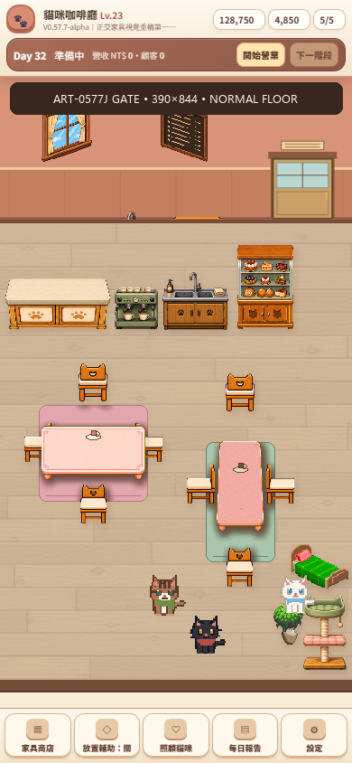
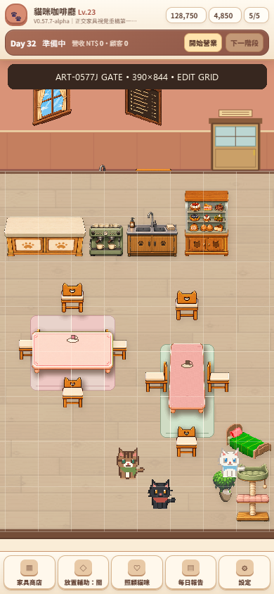
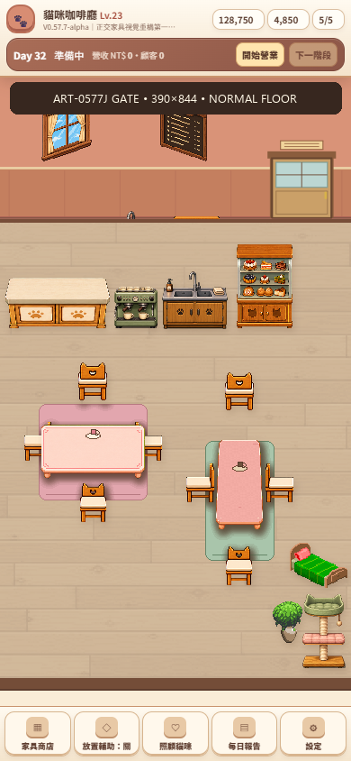
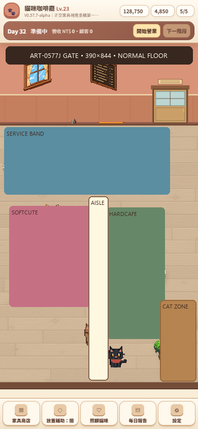
2. Service band A／B／C
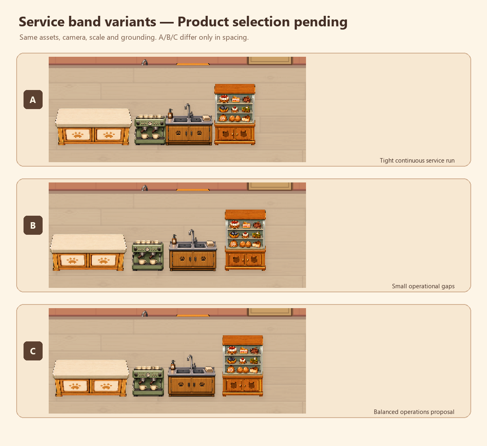
3. 家具精修與共同比例
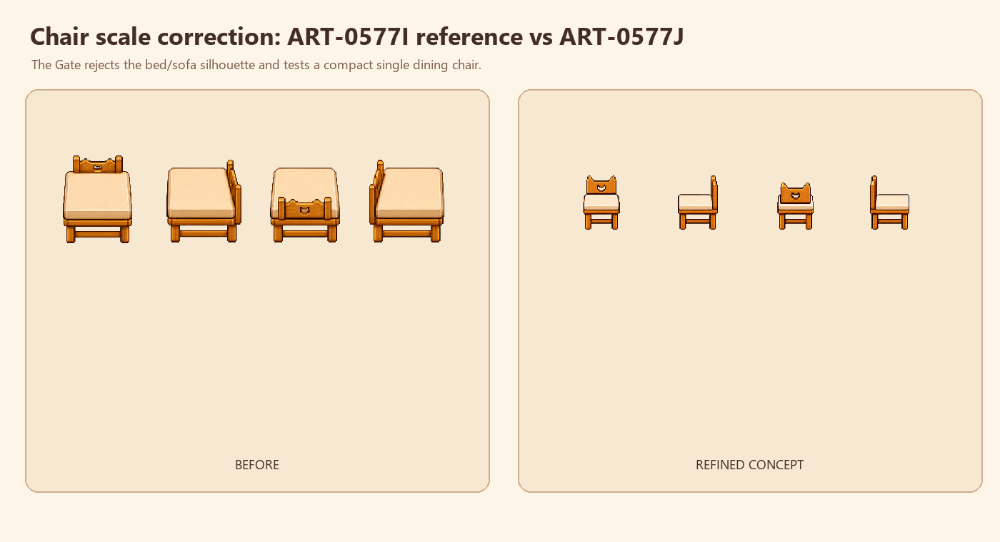
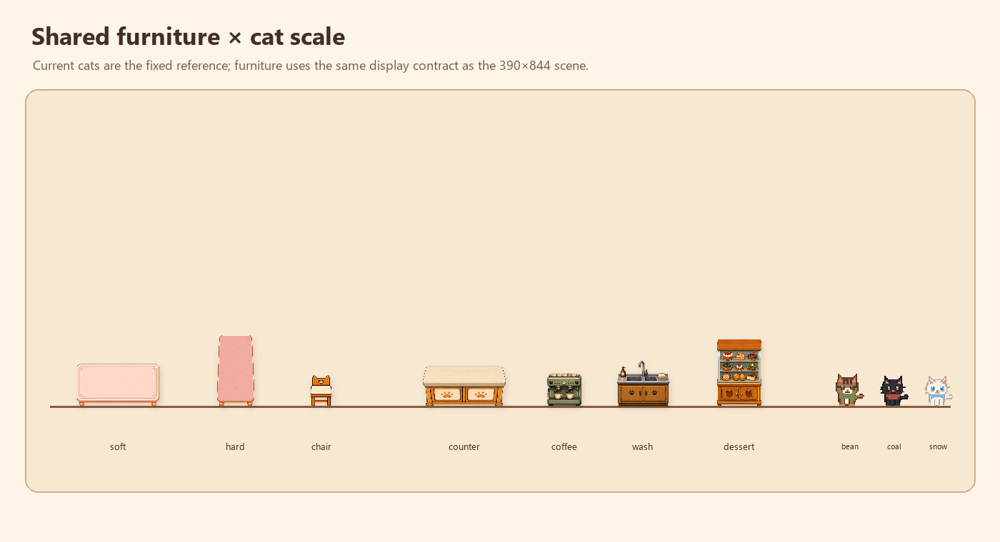
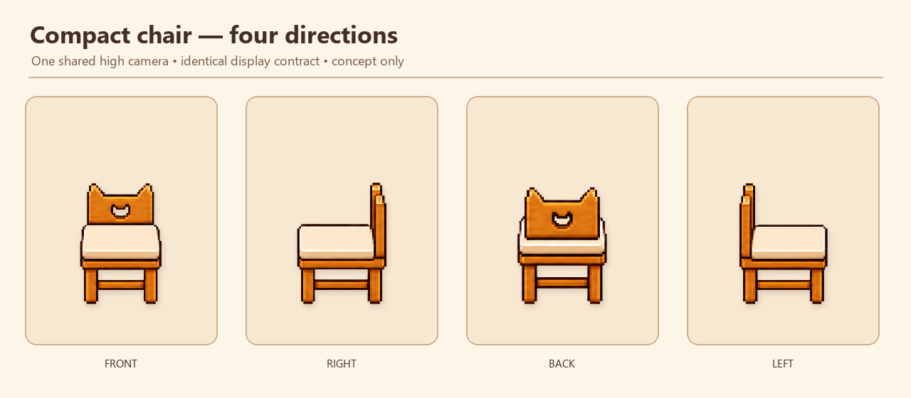
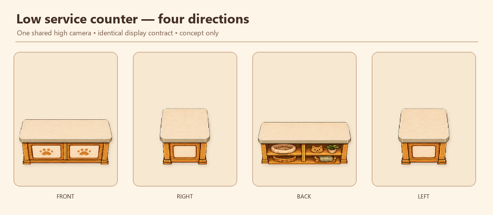
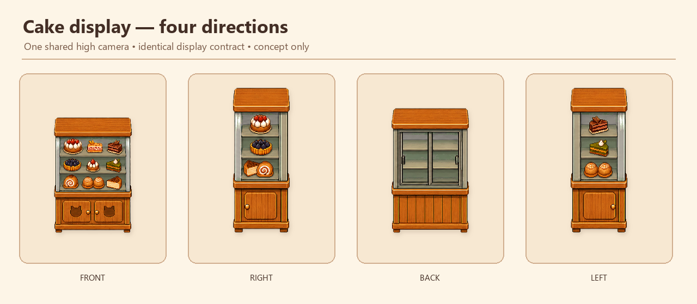
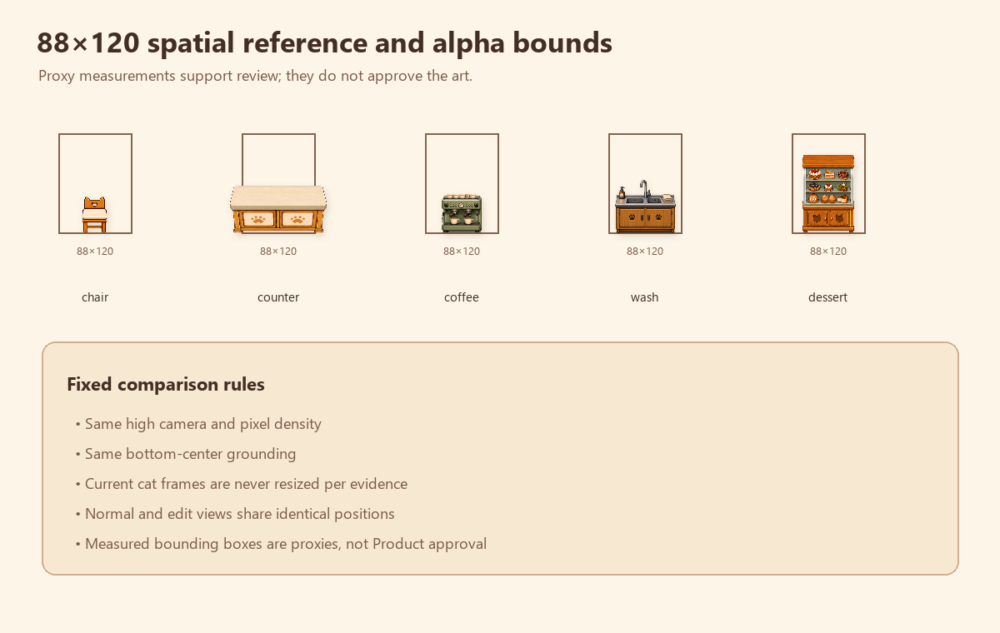
4. 構圖改善
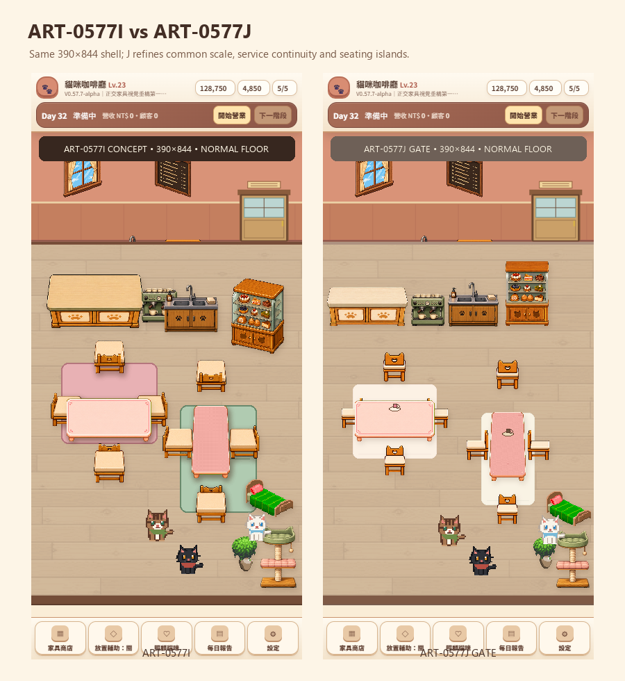
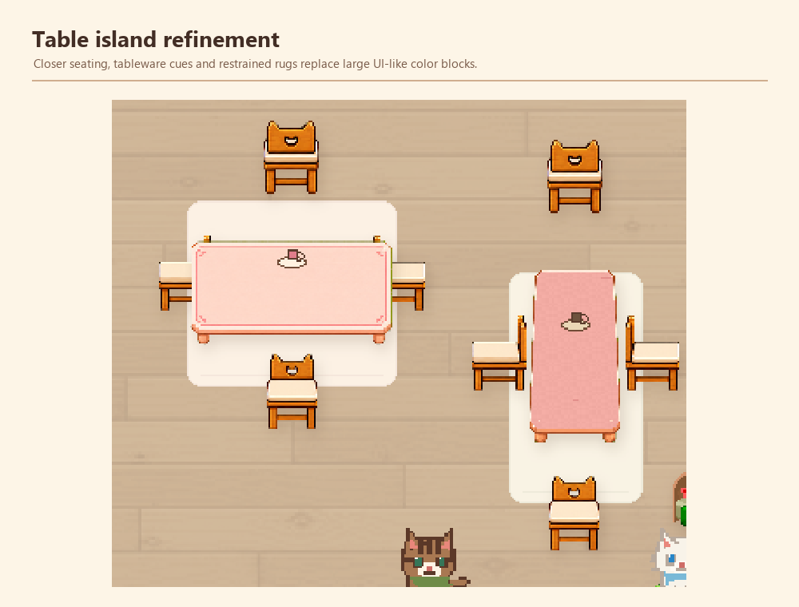
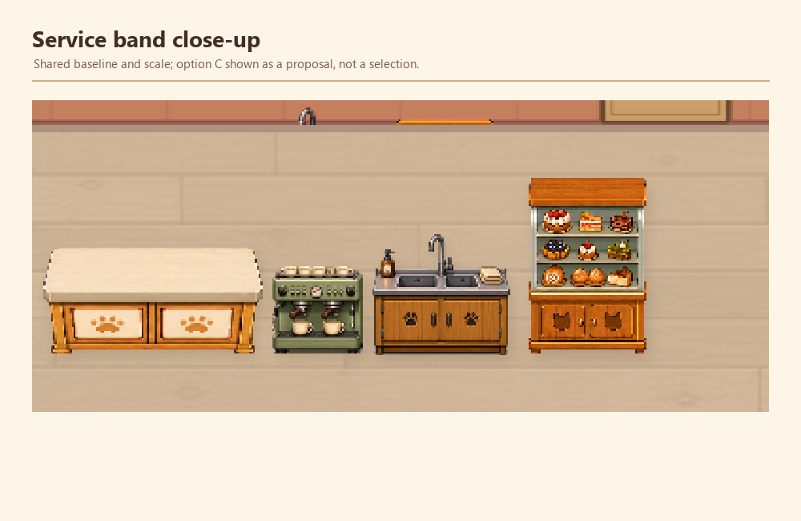
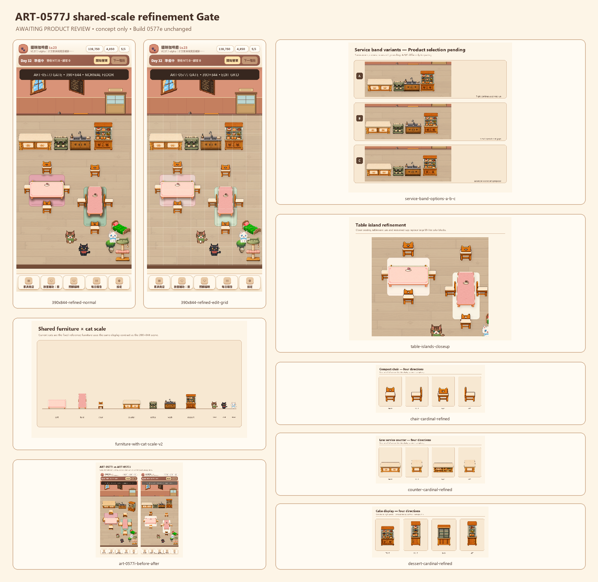
5. Product 必須回答
- chair 是否已退出床／沙發輪廓，且與現有貓咪尺度合理？
- counter、coffee、wash、dessert 是否形成一條可讀的服務帶？
- 選 A、B、C，或全部退回？
- SoftCute／HardCafe 桌椅島是否不再依賴大型 UI-like 色塊？
- 是否允許下一張正式整合卡？本 Gate 本身不授予整合權限。